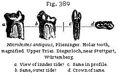
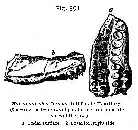
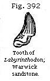
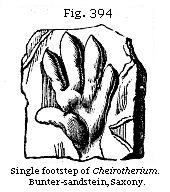
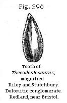
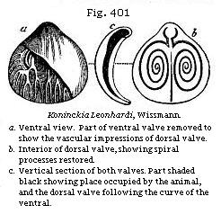
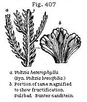
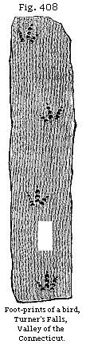
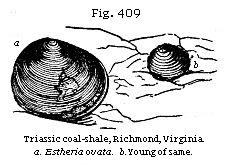

The Student’s Elements of Geology
Beds of Passage between the Lias and Trias, Rhætic Beds. — Triassic Mammifer. — Triple Division of the Trias. — Keuper, or Upper Trias of England. — Reptiles of the Upper Trias. — Foot-prints in the Bunter formation in England. — Dolomitic Conglomerate of Bristol. — Origin of Red Sandstone and Rock-salt. — Precipitation of Salt from inland Lakes and Lagoons. — Trias of Germany. — Keuper. — St. Cassian and Hallstadt Beds. — Peculiarity of their Fauna. — Muschelkalk and its Fossils. — Trias of the United States. — Fossil Foot-prints of Birds and Reptiles in the Valley of the Connecticut. — Triassic Mammifer of North Carolina. — Triassic Coal-field of Richmond, Virginia. — Low Grade of early Mammals favourable to the Theory of Progressive Development.
Beds of Passage between the Lias and Trias—Rhætic Beds.—We have mentioned in the last chapter (p. 356) that the base of the Lower Lias is characterised, both in England and Germany, by beds containing distinct species of Ammonites, the lowest subdivision having been called the zone of Ammonites planorbis. Below this zone, on the boundary line between the Lias and the strata of which we are about to treat, called “Trias,” certain cream-coloured limestones devoid of fossils are usually found. These white beds were called by William Smith the White Lias, and they have been shown by Mr. Charles Moore to belong to a formation similar to one in the Rhætian Alps of Bavaria, to which Mr. Gumbel has applied the name of Rhætic. They have also long been known as the Koessen beds in Germany, and may be regarded as beds of passage between the Lias and Trias. They are named the Penarth beds by the Government surveyors of Great Britain, from Penarth, near Cardiff, in Glamorganshire, where they sometimes attain a thickness of fifty feet.
The principal member of this group has been called by Dr. Wright the Avicula contorta bed,* as this shell is very abundant, and has a wide range in Europe. General Portlock first described the formation as it occurs at Portrush, in Antrim, where the Avicula contorta is accompanied by Pecten Valoniensis, as in Germany.
The best known member of the group, a thin band or bone-breccia, is conspicuous among the black shales in the neigh-
* Dr. Wright, on Lias and Bone Bed, Quart. Geol. Journ., 1860, vol. xvi.
bourhood of Axmouth in Devonshire, and in the cliffs of Westbury-on-Severn, as well as at Aust and other places on the borders of the Bristol Channel. It abounds in the remains of saurians and fish, and was formerly classed as the lowest bed of the Lias; but Sir P. Egerton first pointed out, in 1841, that it should be referred to the Upper New Red Sandstone, because it contained an assemblage of fossil fish which are either peculiar to this stratum, or belong to species well-known in the Muschelkalk of Germany. These fish belong to the genera Acrodus, Hybodus, Gyrolepis, and Saurichthys.
Among those common to the English bone-bed and the Muschelkalk of Germany are Hybodus plicatilis (Fig. 386), Saurychthys apicalis (Fig. 387), Gyrolepis tenuistriatus (Fig. 388), and G. Albertii. Remains of saurians, Plesiosaurus among others, have also been found in the bone-bed, and plates of an Encrinus. It may be questioned whether some of those fossils which have the most Triassic character may
not have been derived from the destruction of older strata, since in bone-beds, in general, many of the organic remains are undoubtedly derivative.
Triassic Mammifer.—In North-western Germany, as in England, there occurs beneath the Lias a remarkable bone breccia. It is filled with shells and with the remains of fishes and reptiles, almost all the genera of which, and some even of the species, agree with those of the subjacent Trias. This breccia has accordingly been considered by Professor Quenstedt, and other German geologists of high authority, as the newest or uppermost part of the Trias. Professor Plieninger found in it, in 1847, the molar tooth of a small Triassic mammifer, called by him Microlestes antiquus. He inferred its true nature from its double fangs, and from the form and number of the protuberances or cusps on the flat crown; and considering it as predaceous, probably insectivorous, he called it Microlestes from micros, little, and lestes, a beast of prey. Soon afterwards he found a second tooth, also at the same locality, Diegerloch, about two miles to the south-east of Stuttgart.
No anatomist had been able to give any feasible conjecture as to the affinities of this minute quadruped until Dr. Falconer, in 1857, recognised an unmistakable resemblance between its teeth and the two back molars of his new genus Plagiaulax (Fig. 306), from the Purbeck strata. This would lead us to the conclusion that Microlestes was marsupial and plant-eating.
In Würtemberg there are two bone-beds, namely, that containing the Microlestes, which has just been described, which constitutes, as we have seen, the uppermost member of the Trias, and another of still greater extent, and still more rich in the remains of fish and reptiles, which is of older date, intervening between the Keuper and Muschelkalk.
The genera Saurichthys, Hybodus, and Gyrolepis are found in both these breccias, and one of the species, Saurichthys Mongeoti, is common to both bone-beds, as is also a remarkable reptile called Nothosaurus mirabilis. The saurian called Belodon by H. von Meyer, of the Thecodont family, is another Triassic form, associated at Diegerloch with Microlestes.
Between the Lias and the Coal (or Carboniferous group) there is interposed, in the midland and western counties of England, a great series of red loams, shales, and sandstones, to which the name of the “New Red Sandstone formation” was first given, to distinguish it from other shales and sandstones called the “Old Red,” often identical in mineral character, which lie immediately beneath the coal. The name of “Red Marl” has been incorrectly applied to the red clays of this formation, as before explained (p. 38), for they are remarkably free from calcareous matter. The absence, indeed, of carbonate of lime, as well as the scarcity of organic remains, together with the bright red colour of most of the rocks of this group, causes a strong contrast between it and the Jurassic formations before described.
The group in question is more fully developed in Germany than in England or France. It has been called the Trias by German writers, or the Triple Group, because it is separable into three distinct formations, called the “Keuper,” the “Muschelkalk,” and the “Bunter-sandstein.” Of these the middle division, or the Muschelkalk, is wholly wanting in England, and the uppermost (Keuper) and lowest (Bunter) members of the series are not rich in fossils.
Upper Trias or Keuper.—In certain grey indurated marls below the bone-bed Mr. Boyd Dawkins has found at Watchet, on the coast of Somersetshire, a molar tooth of Microlestes, enabling him to refer to the Trias strata formerly supposed to be Liassic. Mr. Charles Moore had previously discovered many teeth of mammalia of the same family near Frome, in Somersetshire, in the contents of a vertical fissure traversing a mass of carboniferous limestone. The top of this fissure must have communicated with the bed of the Triassic sea, and probably at a point not far from the ancient shore on which the small marsupials of that era abounded.
This upper division of the Trias called the Keuper is of great thickness in the central counties of England, attaining, according to Mr. Hull’s estimate, no less than 3450 feet in Cheshire, and it covers a large extent of country between Lancashire and Devonshire.
In Worcestershire and Warwickshire in sandstone belonging to the uppermost part of the Keuper the bivalve crustacean Estheria minuta occurs. The member of the English “New Red” containing this shell, in those parts of England, is, according to Sir Roderick Murchison and Mr. Strickland, 600 feet thick, and consists chiefly of red marl or slate, with
a band of sandstone. Ichthyodorulites, or spines of Hybodus, teeth of fishes, and footprints of reptiles were observed by the same geologists in these strata.
In the Upper Trias or Keuper the remains of two saurians of the order Lacertilia have been found. The one called Rhynchosaurus occurred at Grinsell near Shrewsbury, and is characterised by having a small bird-like skull and jaws without teeth. The other Hyperodapedon (Fig. 391) was first noticed in 1858, near Elgin, in strata now recognised as Upper Triassic, and afterwards in beds of about the same age in the neighbourhood of Warwick. Remains of the same genus have been found both in Central India and Southern Africa in rocks believed to be of Triassic age. The Hyperodapedon has been shown by Professor Huxley to be a terrestrial reptile having numerous palatal teeth, and closely allied to the living Sphenodon of New Zealand.
The recent discoveries of a living saurian in New Zealand so closely allied to this supposed extinct division of the Lacertilia seems to afford an illustration of a principle pointed out by Mr. Darwin of the survival in insulated tracts, after many changes in physical geography, of orders of which the congeners have become extinct on continents where they have been exposed to the severer competition of a larger progressive fauna.
Teeth of Labyrinthodon (Fig. 392) found in the Keuper in Warwickshire were examined microscopically by Professor Owen, and compared with other teeth from the German Keuper. He found after careful investigation that neither of them could be referred to true saurians, although they had been named Mastodonsaurus and Phytosaurus by Jäger. It appeared that they were of the Batrachian order, and of gigantic
dimensions in comparison with any representatives of that order now living. Both the Continental and English fossil teeth exhibited a most complicated texture, differing from that previously observed in any reptile, whether recent or extinct, but most nearly analogous to the Ichthyosaurus. A section of one of these teeth exhibits a series of irregular folds, resembling the labyrinthic windings of the surface of the brain; and from this character Professor Owen has proposed the name Labyrinthodon for the new genus. Fig. 393 of part of one is given from his “Odontography,” plate 64, A. The entire length of this tooth is supposed to have been about three inches and a half, and the breadth at the base one inch and a half.
Rock-salt.—In Cheshire and Lancashire there are red clays containing gypsum and salt of the age of the Trias which are between 1000 and 1500 feet thick. In some places lenticular masses of pure rock-salt nearly 100 feet thick are interpolated between the argillaceous beds. At the base of the formation beneath the rock-salt occur the Lower Sandstones and Marl, called provincially in Cheshire “water-stones,” which are largely quarried for building. They are often ripple-marked, and are impressed with numerous footprints of reptiles.
The basement beds of the Keuper rest with a slight
unconformability upon an eroded surface of the “Bunter” next to be described.
Lower Trias or Bunter.—The lower division or English representative of the “Bunter” attains a thickness of 1500 feet in the counties last mentioned, according to Professor Ramsay. Besides red and green shales and red sandstones, it comprises much soft white quartzose sandstone, in which the trunks of silicified trees have been met with at Allesley Hill, near Coventry. Several of them were a foot and a half in diameter, and some yards in length, decidedly of coniferous wood, and showing rings of annual growth.* Impressions, also, of the footsteps of animals have been detected in Lancashire and Cheshire in this formation. Some of the most remarkable occur a few miles from Liverpool, in the whitish quartzose sandstone of Storton Hill, on the west side of the Mersey. They bear a close resemblance to tracks first observed in this member of the Upper New Red Sandstone, at the village of Hesseberg, near Hildburghausen, in Saxony. For many years these footprints have been referred to a large unknown quadruped, provisionally named Cheirotherium by Professor Kaup, because the marks both of the fore and hind feet resembled impressions made by a human hand. (See Fig. 394.) The foot-marks at Hesseberg are partly concave, and partly in relief, the former, or the depressions, are seen upon the upper surface of the sandstone slabs, but those in relief are only upon the lower surfaces, being, in fact, natural casts, formed in the subjacent footprints as in moulds. The larger impressions, which seem to be those of the hind foot, are generally eight inches in length, and five in width, and one was twelve inches long. Near each large footstep, and at a regular distance (about an inch and a half) before it, a smaller print of a fore foot, four inches long and three inches wide, occurs. The footsteps follow each other
* Buckland, Proc. Geol. Soc., vol. ii, p. 439; and Murchison and Strickland, Geol. Trans., Second Series., vol. v, p. 347.
in pairs, each pair in the same line, at intervals of fourteen inches from pair to pair. The large as well as the small steps show the great toes alternately on the right and left side; each step makes the print of five toes, the first, or great toe, being bent inward like a thumb. Though the fore and hind foot differ so much in size, they are nearly similar in form.
As neither in Germany nor in England had any bones or teeth been met with in the same identical strata as the footsteps, anatomists indulged, for several years, in various conjectures respecting the mysterious animals from which they might have been derived. Professor Kaup suggested that the unknown quadruped might have been allied to the Marsupialia; for in the kangaroo the first toe of the fore foot is in a similar manner set obliquely to the others, like a thumb, and the disproportion between the fore and hind feet is also very great. But M. Link conceived that some of the four species of animals of which the tracks had been found in Saxony might have been gigantic Batrachians, and when it was afterwards inferred that the Labyrinthodon was an air-breathing reptile, it was conjectured by Professor Owen that it might be one and the same as the Cheirotherium.
Dolomitic Conglomerate of Bristol.—Near Bristol, in Somersetshire, and in other counties bordering the Severn, the lowest strata belonging to the Triassic series consist of a conglomerate or breccia resting unconformably upon the Old Red Sandstone, and on different members of the Carboniferous rocks, such as the Coal Measures, Millstone Grit, and Mountain Limestone. This mode of superposition will be understood by reference to the section below Dundry Hill (Fig. 85), where No. 4 is the dolomitic conglomerate. Such breccias may have been partly the result of the subÆrial waste of an old land-surface which gradually sank down and suffered littoral denudation in proportion as it became submerged. The pebbles and fragments of older rocks which constitute the conglomerate are cemented together by a red or yellow base of dolomite, and in some places the encrinites and other fossils derived from the Mountain Limestone are so detached from the parent rocks that they have the deceptive appearance of belonging to a fauna contemporaneous with the dolomitic beds in which they occur. The imbedded fragments are both rounded and angular, some consisting of sandstone from the coal-measures, being of vast size, and weighing nearly a ton. Fractured bones and teeth of saurians which are truly of contemporaneous origin are dispersed through some parts of the breccia, and two of these reptiles called Thecodont saurians, named from the
manner in which the teeth were implanted in the jawbone, obtained great celebrity because the patches of red conglomerate in which they were found, near Bristol, were originally supposed to be of Permian or Palæozoic age, and therefore the only representatives in England of vertebrate animals of so high a grade in rocks of such antiquity. The teeth of these saurians are conical, compressed, and with finely serrated edges (see Fig. 396); they are referred by Professor Huxley to the Dinosaurian order.
Origin of Red Sandstone and Rock-salt.—In various parts of the world, red and mottled clays and sandstones, of several distinct geological epochs, are found associated with salt, gypsum, and magnesian limestone, or with one or all of these substances. There is, therefore, in all likelihood, a general cause for such a coincidence. Nevertheless, we must not forget that there are dense masses of red and variegated sandstones and clays, thousands of feet in thickness, and of vast horizontal extent, wholly devoid of saliferous or gypseous matter. There are also deposits of gypsum and of common salt, as in the blue-clay formation of Sicily, without any accompanying red sandstone or red clay.
These red deposits may be accounted for by the decomposition of gneiss and mica schist, which in the eastern Grampians of Scotland has produced a mass of detritus of precisely the same colour as the Old Red Sandstone.
It is a general fact, and one not yet accounted for, that scarcely any fossil remains are ever preserved in stratified rocks in which this oxide of iron abounds; and when we find fossils in the New or Old Red Sandstone in England, it is in the grey, and usually calcareous beds, that they occur. The saline or gypseous interstratified beds may have been produced by submarine gaseous emanations, or hot mineral springs, which often continue to flow in the same spots for ages. Beds of rock-salt are, however, more generally attributed to the evaporation of lakes or lagoons communicating at intervals with the ocean. In Cheshire two beds of salt occur of the extraordinary thickness of 90 or even 100 feet, and extending over an area supposed to be 150 miles in diameter. The adjacent beds present ripple-marked sandstones and footprints of animals at so many levels as to imply that the whole area underwent a slow and gradual depression during the formation of the red sandstone.
Major Harris, in his “Highlands of Ethiopia,” describes a
salt lake, called the Bahr Assal, near the Abyssinian frontier, which once formed the prolongation of the Gulf of Tadjara, but was afterwards cut off from the gulf by a broad bar of lava or of land upraised by an earthquake. “Fed by no rivers, and exposed in a burning climate to the unmitigated rays of the sun, it has shrunk into an elliptical basin, seven miles in its transverse axis, half filled with smooth water of the deepest cærulean hue, and half with a solid sheet of glittering snow-white salt, the offspring of evaporation.” “If,” says Mr. Hugh Miller, “we suppose, instead of a barrier of lava, that sand-bars were raised by the surf on a flat arenaceous coast during a slow and equable sinking of the surface, the waters of the outer gulf might occasionally topple over the bar, and supply fresh brine when the first stock had been exhausted by evaporation.”
The Runn of Cutch, as I have shown elsewhere,* is a low region near the delta of the Indus, equal in extent to about a quarter of Ireland, which is neither land nor sea, being dry during part of every year, and covered by salt water during the monsoons. Here and there its surface is incrusted over with a layer of salt caused by the evaporation of sea-water. A subsiding movement has been witnessed in this country during earthquakes, so that a great thickness of pure salt might result from a continuation of such sinking.
In Germany, as before hinted, chapter 21, the Trias first received its name as a Triple Group, consisting of two sandstones with an intermediate marine calcareous formation, which last is wanting in England.
| German | French | English |
| Keuper | Marnes irisées | Saliferous and gypseous shales and sandstone. |
| Muschelkalk | Muschelkalk, on calcaire coquillier | Wanting in England. |
| Bunter-sandstein | Grès bigarré | Sandtone and quartzose conglomerate. |
Keuper.—The first of these, or the Keuper, underlying the beds before described as Rhætic, attains in Würtemberg a thickness of about 1000 feet. It is divided by Alberti into sandstone, gypsum, and carbonaceous clay-slate.† Remains of reptiles called Nothosaurus and Phytosaurus, have been found in it with Labyrinthodon; the detached teeth, also, of
* Principles of Geology, chap. xxvii.
† Monog. des Bunter-Sandsteins.
placoid fish and of Rays, and of the genera Saurichthys and Gyrolepis (Figs. 387, 388). The plants of the Keuper are generically very analogous to those of the oolite and lias, consisting of ferns, equisetaceous plants, cycads, and conifers, with a few doubtful monocotyledons. A few species such as Equisetites columnaris, are common to this group and the oolite.
St. Cassian and Hallstadt Beds (see Map, Fig. 398).— The sandstones and clay of the Keuper resemble the deposits of estuaries and a shallow sea near the land, and afford, in the N.W. of Germany, as in France and England, but a scanty representation of the marine life of that period. We might, however, have anticipated, from its rich reptilian fauna, that the contemporaneous inhabitants of the sea of the Keuper period would be very numerous, should we ever have an opportunity of bringing their remains to light. This, it is believed, has at length been accomplished, by the position now assigned to certain Alpine rocks called the “St. Cassian beds,” the true place of which in the series was until lately a subject of much doubt and discussion. It has been proved that the Hallstadt beds on the northern flanks of the Austrian Alps correspond in age with the St. Cassian beds on their southern declivity, and the Austrian geologists, M. Suess of Vienna and others, have satisfied themselves that the Hallstadt formation is referable to the period of the Upper Trias.
Assuming this conclusion to be correct, we become acquainted suddenly and unexpectedly with a rich marine fauna belonging to a period previously believed to be very barren of organic remains, because in England, France, and Northern Germany the upper Trias is chiefly represented by beds of fresh or brackish water origin.
About 600 species of invertebrate fossils occur in the Hallstadt and St. Cassian beds, many of which are still undescribed; some of the Mollusca are of new and peculiar genera, as Scoliostoma, Fig. 399, and Platystoma, Fig. 400, among the Gasteropoda; and Koninckia, Fig. 401, among the Brachiopoda.
The following table of genera of marine shells from the Hallstadt and St. Cassian beds, drawn up first on the joint authority of M. Suess and the late Dr. Woodward, and since corrected by Messrs. Etheridge and Tate, shows how many connecting links between the fauna of primary and secondary Palæozoic and Mesozoic rocks are supplied by the St. Cassian and Hallstadt beds.
| Common to Older Rocks | Characteristic Triassic Genera | Common to Newer Rocks | |||
| Orthoceras Bactrites Macrocheilus Loxonema Holopella Murchisonia Porcellia Athyris Retzia Cyrtina Euomphalus |
Ceratites Cochloceras Choristoceras Rhabdoceras Aulacoceras Scoliostoma * Naticella Platystoma Ptychostoma Euchrysalis Halobia Hornesia Amphiclina Koninckia Cassianella † Myophoria † |
Ammonites Chemnitzia Cerithium Monodonta Opis Sphoera Cardita Myoconcha Hinnites Monotis Plicatula Pachyrisma Thecidium |
|||
* Reaches its maximum in the Trias, but passes
down to older rocks.
† Reach their maximum in the Trias, but pass up to newer
rocks.
The first column marks the last appearance of several genera which are characteristic of Palæozoic strata. The second shows those genera which are characteristic of the Upper Trias, either as peculiar to it, or, as in the three cases marked by asterisks, reaching their maximum of development at this era. The third column marks the first appearance in Triassic rocks of genera destined to become more abundant in later ages.
It is only, however, when we contemplate the number of species by which each of the above-mentioned genera are represented that we comprehend the peculiarities of what is commonly called the St. Cassian fauna. Thus, for example, the Ammonite, which is not common to older rocks, is represented by no less than seventy-three species; whereas Loxonema, which is only known as common to older rocks, furnishes fifteen Triassic species. Cerithium, so abundant in tertiary strata, and which still lives, is represented by no less than fourteen species. As the Orthoceras had never been met with in the marine Muschelkalk, much surprise was naturally felt that seven or eight species of the genus should appear in the Hallstadt beds, assuming these last to belong to the Upper Trias. Among these species are some of large dimensions, associated with large Ammonites with foliated lobes, a form never seen before so low in the series, while the Orthoceras had never been seen so high.
On the whole, the rich marine fauna of Hallstadt and St. Cassian, now generally assigned to the lowest members of the Upper Trias or Keuper, leads us to suspect that when the strata of the Triassic age are better known, especially those belonging to the period of the Bunter sandstone, the break between the Palæozoic and Mesozoic Periods may be almost effaced. Indeed some geologists are not yet satisfied that the true position of the St. Cassian beds (containing so great an admixture of types, having at once both Mesozoic and Palæozoic affinities) is made out, and doubt whether they have yet been clearly proved to be newer than the Muschelkalk.
Muschelkalk.—The next member of the Trias in Germany, the Muschelkalk, which underlies the Keuper before described, consists chiefly of a compact greyish limestone, but includes beds of dolomite in many places, together with gypsum and rock-salt. This limestone, a formation wholly unrepresented in England, abounds in fossil shells, as the name implies. Among the Cephalopoda there are no belemnites, and no ammonites with foliated sutures, as in the Lias, and Oolite, and the Hallstadt beds; but we find instead a genus allied to
the Ammonite, called Ceratites by de Haan, in which the descending lobes (Fig. 402) terminate in a few small denticulations pointing inward. Among the bivalve crustacea, the Estheria minuta, Bronn (see Fig. 390), is abundant, ranging through the Keuper, Muschelkalk, and Bunter-sandstein; and Gervillia socialis (Fig. 403), having a similar range, is found in great numbers in the Muschelkalk of Germany, France, and Poland.
The abundance of the heads and stems of lily encrinites, Encrinus liliiformis (Fig. 404), (or Encrinites moniliformis), shows the slow manner in which some beds of this limestone have been formed in clear sea-water. The star-fish called Aspidura loricata (Fig. 405) is as yet peculiar to the Muschelkalk. In the same formation are found the skull and teeth of a reptile of the genus Placodus (see Fig. 406), which was referred originally by Munster, and afterwards by Agassiz, to the class of fishes. But more perfect specimens enabled Professor Owen, in 1858, to show that this fossil animal was a Saurian reptile, which probably fed on shell-bearing mollusks, and used its short and flat teeth, so thickly coated with enamel, for pounding and crushing the shells.
Bunter-sandstein.—The Bunter-sandstein consists of various-coloured sandstones, dolomites, and red clays, with some beds, especially in the Hartz, of calcareous pisolite or roe-stone, the whole sometimes attaining a thickness of more than 1000 feet. The sandstone of the Vosges is proved, by its fossils, to belong to this lowest member of the Triassic group. At Sulzbad (or Soultz-les-bains), near Strasburg, on the flanks of the Vosges, many plants have been obtained from the “bunter,” especially conifers of the extinct genus Voltzia, of which the fructification has been preserved. (See Fig. 407.) Out of thirty species of ferns, cycads, conifers, and other plants, enumerated by M. Ad. Brongniart, in 1849, as coming from the “Grès bigarré,” or Bunter, not one is common to the Keuper.
The footprints of Labyrinthodon observed in the clays of this formation at Hildburghausen, in Saxony, have already been mentioned. Some idea of the variety and importance of the terrestrial vertebrate fauna of the three members of the Trias in Northern Germany may be derived from the fact that in the great monograph by the late Hermann von Meyer on the reptiles
of the Trias, the remains of no less than eighty distinct species are described and figured.
New Red Sandstone of the Valley of the Connecticut River.—In a depression of the granitic or hypogene rocks in the States of Massachusetts and Connecticut strata of red sandstone, shale, and conglomerate are found, occupying an area more than 150 miles in length from north to south, and about five to ten miles in breadth, the beds dipping to the eastward at angles varying from 5 to 50 degrees. The extreme inclination of 50 degrees is rare, and only observed in the neighbourhood of masses of trap which have been intruded into the red sandstone while it was forming, or before the newer parts of the deposit had been completed. Having examined this series of rocks in many places, I feel satisfied that they were formed in shallow water, and for the most part near the shore, and that some of the beds were from time to time raised above the level of the water, and laid dry, while a newer series, composed of similar sediment, was forming.
According to Professor Hitchcock, the footprints of no less than thirty-two species of bipeds, and twelve of quadrupeds, have been already detected in these rocks. Thirty of these are believed to be those of birds, four of lizards, two of chelonians, and six of batrachians. The tracks have been found in more than twenty places, scattered through an extent of nearly 80 miles from north to south, and they are repeated through a succession of beds attaining at some points a thickness of more than 1000 feet.*
The bipedal impressions are, for the most part, trifid, and show the same number of joints as exist in the feet of living tridactylous birds. Now, such birds have three phalangeal bones for the inner toe, four for the middle, and five for the outer one (see Fig. 408); but the impression of the terminal joint is that of the nail only. The fossil footprints exhibit regularly, where the joints are seen, the same number; and we see in each continuous line of tracks
* Hitchcock, Mem. of Amer. Acad., New Series, vol. iii, p. 129, 1848.
the three-jointed and five-jointed toes placed alternately outward, first on the one side, and then on the other. In some specimens, besides impressions of the three toes in front, the rudiment is seen of the fourth toe behind. It is not often that the matrix has been fine enough to retain impressions of the integument or skin of the foot; but in one fine specimen found at Turner’s Falls, on the Connecticut, by Dr. Deane, these markings are well preserved, and have been recognised by Professor Owen as resembling the skin of the ostrich, and not that of reptiles.
The casts of the footprints show that some of the fossil bipeds of the red sandstone of Connecticut had feet four times as large as the living ostrich, but scarcely, perhaps, larger than the Dinornis of New Zealand, a lost genus of feathered giants related to the Apteryx, of which there were many species which have left their bones and almost entire skeletons in the superficial alluvium of that island. By referring to what was said of the Iguanodon of the Wealden, the reader will perceive that the Dinosaur was somewhat intermediate between reptiles and birds, and left a series of tridactylous impressions on the sand.
To determine the exact age of the red sandstone and shale containing these ancient footprints, in the United States, is not possible at present. No fossil shells have yet been found in the deposit, nor plants in a determinable state. The fossil fish are numerous and very perfect; but they are of a peculiar type, called Ischypterus, by Sir Philip Egerton, from the great size and strength of the fulcral rays of the dorsal fin, from ischus, strength, and pteron, a fin.
The age of the Connecticut beds can not be proved by direct superposition, but may be presumed from the general structure of the country. That structure proves them to be newer than the movements to which the Appalachian or Allegheny chain owes its flexures, and this chain includes the ancient or palæozoic coal-formation among its contorted rocks.
Coal-field of Richmond, Virginia.—In the State of Virginia, at the distance of about 13 miles eastward of Richmond, the capital of that State, there is a coal-field occurring in a depression of the granite rocks, and occupying a geological position analogous to that of the New Red Sandstone, above-mentioned, of the Connecticut valley. It extends 26 miles from north to south, and from four to twelve from east to west.
The plants consist chiefly of zamites, calamites, equiseta, and ferns, and, upon the whole, are considered by Professor
Heer to have the nearest affinity to those of the European Keuper.
The equiseta are very commonly met with in a vertical position more or less compressed perpendicularly. It is clear that they grew in the places where they are now buried in strata of hardened sand and mud. I found them maintaining their erect attitude, at points many miles apart, in beds both above and between the seams of coal. In order to explain this fact, we must suppose such shales and sandstones to have been gradually accumulated during the slow and repeated subsidence of the whole region.
The fossil fish are Ganoids, some of them of the genus Catopterus, others belonging to the liassic genus Tetragonolepis (Æchmodus), see Fig. 376. Two species of Entomostraca called Estheria are in such profusion in some shaly beds as to divide them like the plates of mica in micaceous shales (see Fig. 409).
These Virginian coal-measures are composed of grits, sandstones, and shales, exactly resembling those of older or primary date in America and Europe, and they rival, or even surpass, the latter in the richness and thickness of the coal-seams. One of these, the main seam, is in some places from 30 to 40 feet thick, composed of pure bituminous coal. The coal is like the finest kinds shipped at Newcastle, and when analysed yields the same proportions of carbon and hydrogen—a fact worthy of notice, when we consider that this fuel has been derived from an assemblage of plants very distinct specifically, and in part generically, from those which have contributed to the formation of the ancient or palæozoic coal.
Triassic Mammifer.—In North Carolina, the late Professor Emmons has described the strata of the Chatham coal-field, which correspond in age to those near Richmond, in Virginia. In beds underlying them he has met with three jaws of a small insectivorous mammal which he has called Dromatherium sylvestre, closely allied to Spalacotherium. Its nearest living analogue, says Professor Owen, “is found in Myrmecobius; for each ramus of the lower jaw contained ten small molars in a continuous series, one canine, and three
conical incisors—the latter being divided by short intervals.”
Low Grade of Early Mammals favourable to the Theory of Progressive Development.—There is every reason to believe that this fossil quadruped is at least as ancient as the Microlestes of the European Trias described in p. 368; and the fact is highly important, as proving that a certain low grade of marsupials had not only a wide range in time, from the Trias to the Purbeck, or uppermost oolitic strata of Europe, but had also a wide range in space, namely, from Europe to North America, in an east and west direction, and, in regard to latitude, from Stonesfield, in 52° N., to that of North Carolina, 35° N.
If the three localities in Europe where the most ancient mammalia have been found—Purbeck, Stonesfield, and Stuttgart—had belonged all of them to formations of the same age, we might well have imagined so limited an area to have been peopled exclusively with pouched quadrupeds, just as Australia now is, while other parts of the globe were inhabited by placentals; for Australia now supports one hundred and sixty species of marsupials, while the rest of the continents and islands are tenanted by about seventeen hundred species of mammalia, of which only forty-six are marsupial, namely, the opossums of North and South America. But the great difference of age of the strata in each of these three localities seems to indicate the predominance throughout a vast lapse of time (from the era of the Upper Trias to that of the Purbeck beds) of a low grade of quadrupeds; and this persistency of similar generic and ordinal types in Europe while the species were changing, and while the fish, reptiles, and mollusca were undergoing great modifications, would naturally lead us to suspect that there must also have been a vast extension in space of the same marsupial forms during that portion of the Secondary or Mesozoic epoch which has been termed “the age of reptiles.” Such an inference as to the wide geographical range of the ancient marsupials has been confirmed by the discovery in the Trias of North America of the above-mentioned Dromatherium. The predominance in earlier ages of these mammalia of a low grade, and the absence, so far as our investigations have yet gone, of species of higher organisation, whether aquatic or terrestrial, is certainly in favour of the theory of progressive development.
{kind=link}
{kind=link}
{kind=link}
{kind=link}
{kind=link}